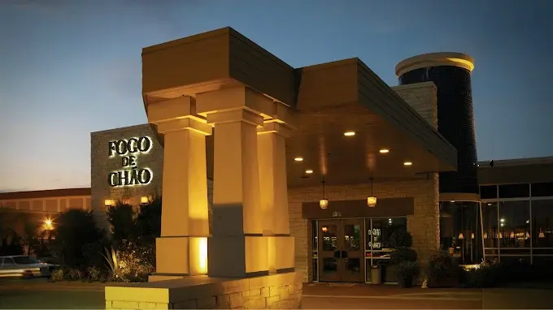
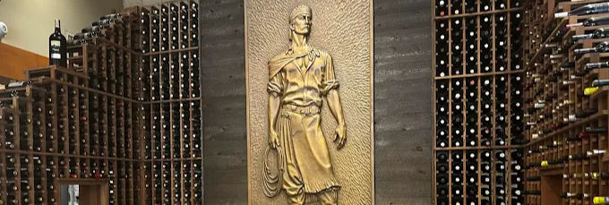
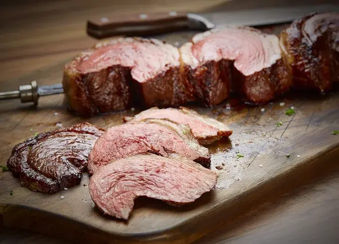
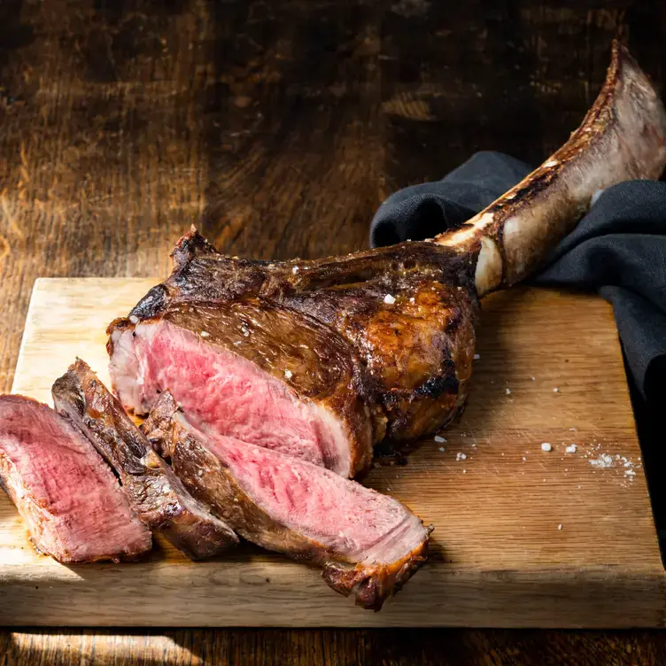

Fogo de Chão

Far From Brazil's Steak Delicacies? -- Experience The Authenticity At Houston´s Fogo de Chão
Stepping into the flames, you are instantly surrounded by the diverse scents of different steak cuts throughout the air. The pleasant low lighting provides a sense of comfort and pleasantness, providing a minimalistic, luxurious, and authentic setting. The Fogo de Chão Steakhouse, located at 8250 Westheimer Rd, Houston, TX 77063, consists of a variety of menus, including brunch, lunch, and dinner, as well as a bar and buffet experience. There are many delicate dishes and experiences to indulge in, such as their populars, the classic delightful Picanha, Filet Mignon, Bacon-Wrapped Steak, Beef Ancho, and Fraldinha, each specifically and uniquely cooked with restaurant techniques.
There's really no way to put the uniqueness and authenticity of Fogo de Chão. A buffet with diverse options is placed right in the center, with chandeliers setting the stage for the indulgent options, including charcuterie, Brazilian ingredients, diverse salads, fresh fruit, and many more delicacies. Fogo de Chão is well known for their lively all-you-can-eat experience, which features continuous tableside service of fire-roasted meats, a gourmet market table with fresh salads and sides, and attentive service where guests control the pace using a two-sided card.
The delightfulness doesn't stop here, however; Fogo de Chão provides cultural traditional dessert options, including the popular guest favorites Cheesecake Brûlée, Tres Leches Cake, Papaya Cream, Molten Chocolate Cake, Key Lime, and Chocolate Brigadeiro.
Fogo de Chão also includes dishes with gluten-free and vegan options. Now, don't close your circle with only the steakhouse experience, as the experience doesn't stop there but continues with seafood options. Such as jumbo shrimp cocktails, seafood towers, and chilled lobster and shrimp.
If you are looking for an indulgent, authentic, and classy restaurant with a variety of options and experiences available, I will highly recommend Fogo de Chão as your primary choice above all the options in your list. It doesn't matter if it's a casual gathering, event, or simply just a casual dinner, Fogo de Chão provides the experience everyone deserves and must be a part of.
- Written By Melanie Tamez



Filed under Food